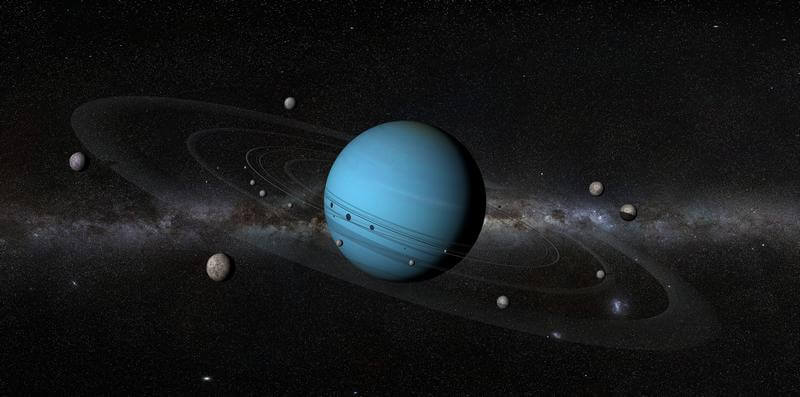
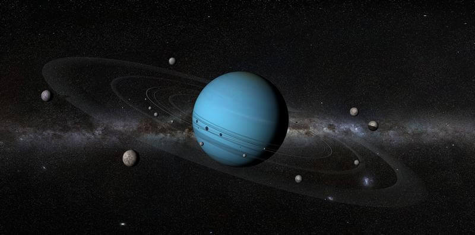

Urano es similar en composición a Neptuno, y los dos tienen una composición diferente de los otros dos gigantes gaseosos (Júpiter y Saturno). Por ello, los astrónomos a veces los clasifican en una categoría diferente, los gigantes helados. La atmósfera de Urano, aunque es similar a la de Júpiter y Saturno por estar compuesta principalmente de hidrógeno y helio, contiene una proporción superior tanto de «hielos» como de agua, amoníaco y metano, junto con trazas de hidrocarburos. Posee la atmósfera planetaria más fría del sistema solar, con una temperatura mínima de 49 K (-224 °C). Asimismo, tiene una estructura de nubes muy compleja, acomodada por niveles, donde se cree que las nubes más bajas están compuestas de agua y las más altas de metano. En contraste, el interior de Urano se encuentra compuesto principalmente de hielo y roca.
Algunos Datos
Gravedad: 8.87 m/s²
Duración del día: 0d 17h 14m
Radio: 25,362 km
Período orbital: 84 años
Superficie: 8.083 miles de millones km²
Lunas: 27
Distancia con el Sol: 2 600 000 000 km
Distancia con la tierra: 2.601 billones de km
 
